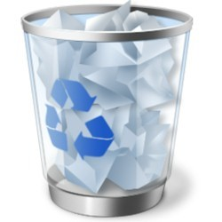
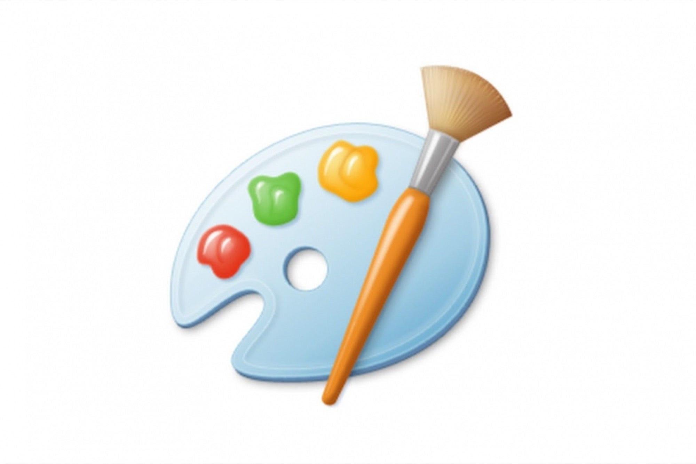

Windows 11 é a versão mais recente do sistema operacional da Microsoft para computadores.
Lançado em 5 de outubro de 2021, o sucessor do Windows 10 vem com visual mais limpo e minimalista, incluindo ícones remodelados, janelas translúcidas, nova iconografia e um Menu Iniciar centralizado.
O software traz também avanços em produtividade, com destaque para os novos layout snaps – um modo especial para gerenciar janelas –, integração com Microsoft Teams e suporte aprimorado a desktops virtuais.
| Aplicativo | Nome | Função |
|---|---|---|
| Calculadora | Usada para realizar cálculos. |
| Calendário | É um sistema que permite medir e representar graficamente o passar do tempo. | |
| Configurações | Instrumento usado para realizar alterações e ajustes. | |
|  | Lixeira | Armazena por um tempo limitado arquivos deletados. |
| Bloco de Notas | É um editor de texto simples que é incluído em todas as versões Microsoft Windows |
| PowerPoint | Trata-se de um software que permite realizar apresentações através de diapositivos (mais conhecidos no Brasil como “slides”). |
| Word | O Microsoft Word 2010 é um programa de processamento de texto, projetado para ajudá-lo a criar documentos de qualidade profissional. |
| Excel | Excel é o nome pelo qual é conhecido o software desenvolvido pela empresa Microsoft, amplamente usado por empresas e particulares para a realização de operações financeiras e contabilísticas usando planilhas eletrônicas (folhas de cálculo). |
| Câmera | Sua função é a captação de imagem e vídeo. |
|  | Paint | Paint é um editor gráfico simples e poderoso com uma variedade de usos. |
| Relógio | O aplicativo Relógio é seu hub para gerenciamento de tempo e foco no Windows. | |
| Dicas | Te ajuda quando necessário. |
| Fotos | É responsável por organizar em um só lugar todas as suas imagens, estejam elas guardadas no PC ou na nuvem do OneDrive. |
| Microsoft Teams | O Microsoft Teams é uma experiência que reúne pessoas, conversas e conteúdo – com as ferramentas que as equipes precisam – para que possam colaborar facilmente para realizar mais. |